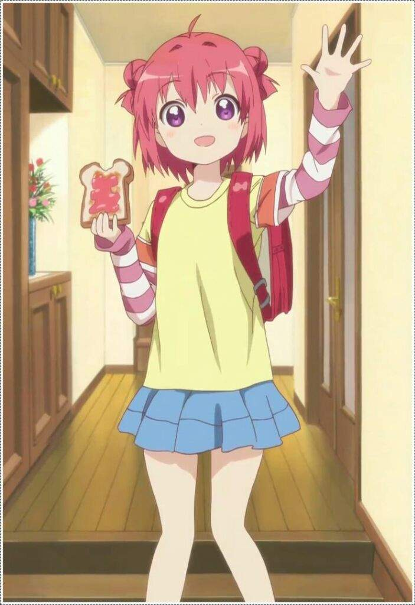
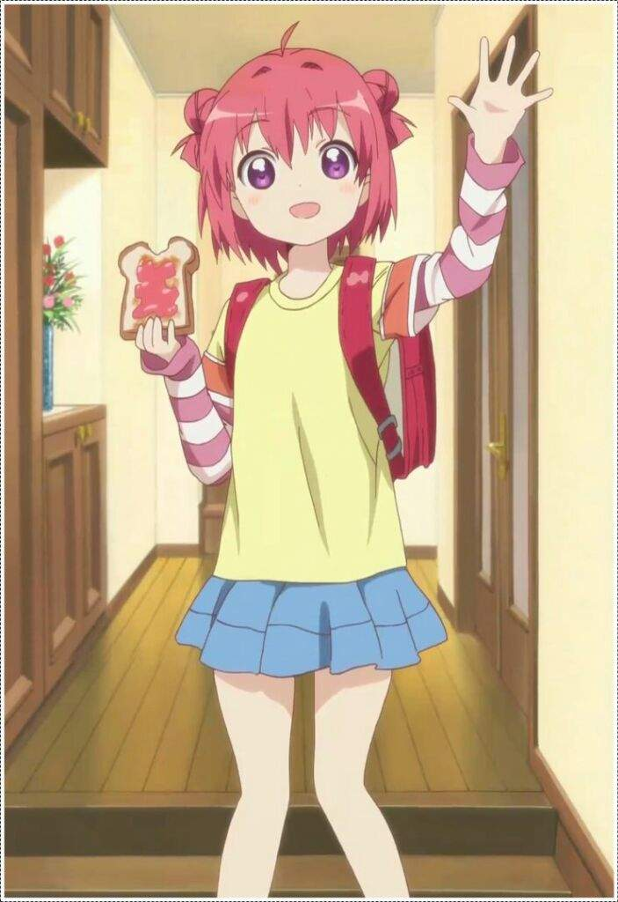

Akaza Akarin
The cutest waifu in the world and my eternal love


About My waifu
Akarin akaza (赤 座 あ か, Akaza Akari). Sometimes called "Akkarin" is one of the main characters of YuruYuri and the most adorable girl in the world.
A harmony-loving, nice girl, she often stands out far less, in comparison to the other characters, so she is often bantered with her small presence. Her friends often peg her character as having the abilities to turn invisible and to fire her Odango like missiles as if they were detachable. Akane is her older sister, Kyōko and Yui are her childhood friends, while Chinatsu, Sakurako, and Himawari are her classmates.

Appearance
Akari is a young girl of average height. She has chin-length red hair, with two small tight buns (odango) on the sides of her head and an ahoge forming on top, and round purple eyes. She is usually seen in her school uniform, but when not at school, she usually dresses casually, with light-colored clothes. When Akari was younger, she had longer hair, extending to the middle of her back.
 

Personality
Akari has a friendly and nice personality. She can easily make friends, but her small presence makes it easy for her to be forgotten or ignored. Her dream is being the center of attention. She's completely unable of being bad or doing bad things (as shown in the king's game in the season 3 episode 1). She gets easily scared and is prone to fainting when surprised or startled.